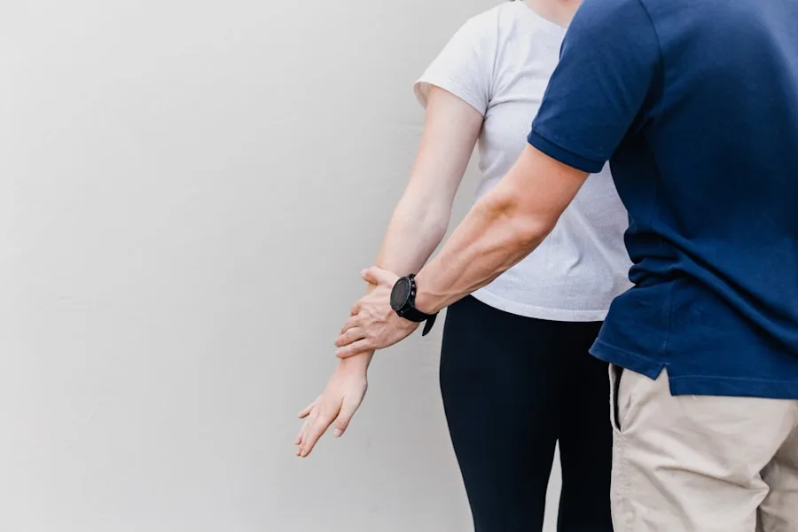
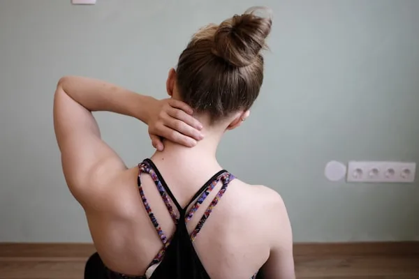
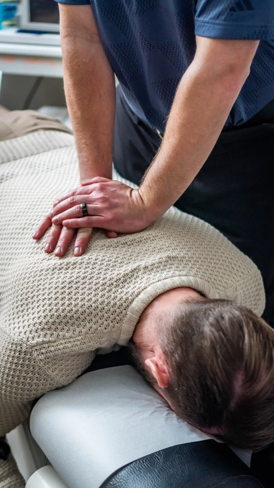
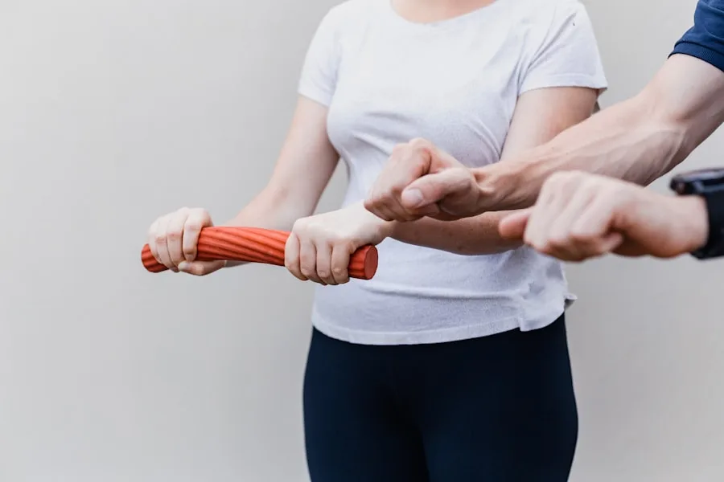
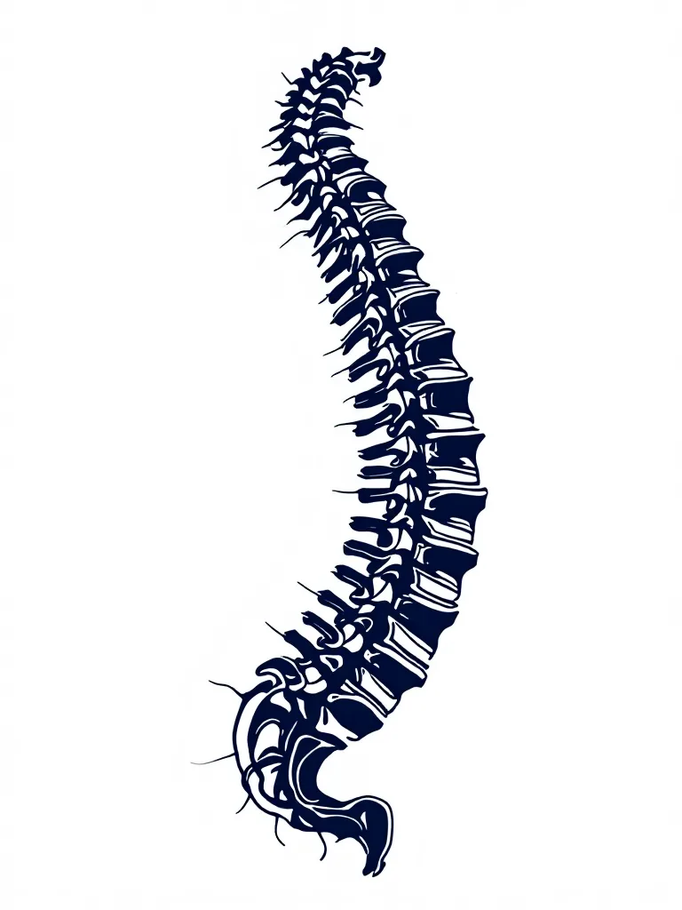
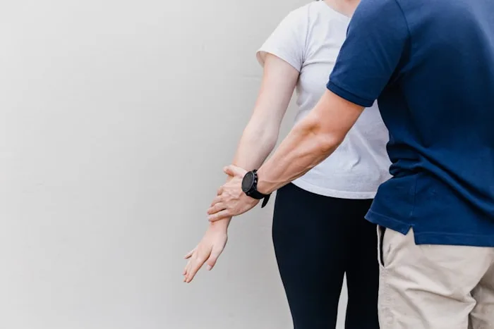
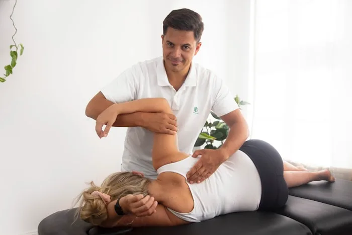
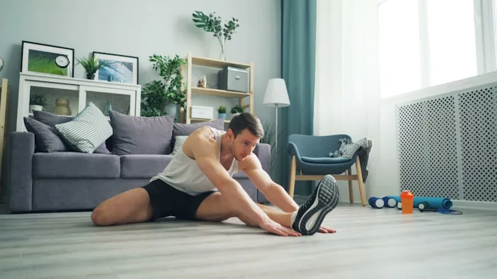

Assessment
A 45-minute first visit: history, movement testing, orthopaedic and neurological checks, and a plain-English explanation of what we found.
What happens firstChiropractic · Riverside · Open Mon–Sat
Assessment, hands-on treatment and a rehab plan with an end date. Same-week appointments, most insurance accepted, no referral needed.
Step 1 of 3 — tell us what is bothering you.
Where does it hurt
Most people arrive knowing where the pain is, not what the diagnosis is. Pick the closest one and we will work backwards from there.

Treatments
No packages you did not agree to. Every plan states how many visits it should take and what we do if it does not work.

A 45-minute first visit: history, movement testing, orthopaedic and neurological checks, and a plain-English explanation of what we found.
What happens first
Hands-on joint work and soft-tissue release, chosen to suit you. If a technique is not right for your body, we use a gentler one and say why.
How treatment works
Three or four exercises, not thirty. Filmed on your phone in the room so you know exactly what it should look like at home.
See the plan
Your first visit
The most common reason people put this off is not knowing what happens. So here it is, start to finish.

Ten minutes on what hurts, when it started, and what you need to get back to.
Movement, joint and nerve testing. If you need imaging or a GP, we say so.

You get hands-on treatment on day one, not just a diagnosis and a rebooking.

A written plan with a visit count and an end date. Plus three exercises.
The practitioners
Three registered chiropractors. You see the same one each visit unless you ask to change.
Doctor of Chiropractic · GCC reg.
Founded the practice in 2012. Special interest in disc-related lower back pain and return-to-work planning.
Doctor of Chiropractic · GCC reg.
Works mostly with desk-based neck and upper-back pain, and with pregnancy-related pelvic pain.
Doctor of Chiropractic · GCC reg.
Sports and lifting injuries. Runs the Saturday clinic and the rehab-progression reviews.
Patient stories
Illustrative reviews for this design mockup.
I had put it off for two years because I assumed it would be an endless course of appointments. They gave me a plan with four visits on it and I was walking properly by the third.
Explained what was happening in my neck without any jargon, then told me which two exercises actually mattered. First clinic that has not tried to sell me a block booking.
Booked on the Monday, seen on the Thursday evening after work. The reception is step-free which mattered a lot when I could barely bend.
Fees & insurance
You pay per visit. If we do not think chiropractic is right for you, we say so at the assessment and you pay for that visit only.
£48 / 20 min
£75 / 45 min
£40 / 20 min
Insurance: we are recognised by Bupa, AXA Health and Vitality. Bring your authorisation number to the first visit and we bill them directly (excess still applies). Not covered? The self-pay prices above are the same prices.
Questions
Adjustments are usually not painful. You may feel a brief pressure and hear a pop, which is gas releasing in the joint, not bones cracking. Some people feel mild soreness the next day, similar to after exercise. We tell you what a technique will feel like before we do it, and we stop if you ask.
Most straightforward cases take four to six visits. You get a written number at the assessment. If you are not meaningfully better by the halfway point, we change the plan or refer you on rather than repeating the same thing.
No. Chiropractors are primary-contact practitioners, so you can book directly. Some insurers do ask for a GP referral before they will authorise cover, so check your policy first if you are claiming.
There is real overlap and we use rehab exercise the same way a physiotherapist would. The difference is emphasis: we spend more of the visit on hands-on joint work. Massage therapy treats soft tissue but does not diagnose. If your problem is a better fit for physiotherapy or a GP, we will tell you at the assessment.
Tell us at booking and bring a list of medications. Osteoporosis, blood thinners, recent surgery and inflammatory arthritis all change which techniques are appropriate, and there are gentler options for every one of them. Some presentations are not suitable for chiropractic at all, and we will say so rather than treat.
Something you can move in — leggings, shorts or loose trousers. You stay clothed. If we need to see a specific area we will ask first and provide a gown.
Book your appointment
Same-week appointments, published prices, and a plan that ends. If we are not the right people for your problem, we will tell you at the assessment.